This document applies to versions 8.4 and later only. For a summary of available versions, please refer to Akana Platform Hardening Documentation.
Akana is a recognized leader in API Management and SOA Governance Automation solutions. Our platform-independent solution set includes the API Gateway, which is further broken down into Policy Manager, the centralized administration console, and Network Director, an intermediary that integrates with Policy Manager to provide high-performance, scalable API security and management capabilities. The solution also includes Community Manager, which provides a branded developer portal for the consumption of API by the developer.
This document describes the best practices and configuration settings to harden Akana's API Gateway and Community Manager products. This document is a supplement to Akana's existing Product Architecture document showing recommendations for a typical large enterprise.
There are several best practices that cover the deployment of the product in a hardened environment.
An external HSM keystore can be used in place of the out of the box Policy Manager keystore (database). The configuration of Policy Manager with HSM is described in a separate document.
API traffic processing should be handled separately from Web traffic and Admin traffic. To this end, the Network Director should not be installed on the same container as Community Manager, or Policy Manager features:
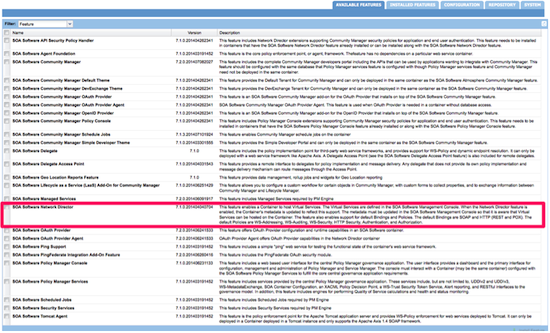
There are two components to this:
To disable the administrative functionality in the Community Manager:
In the Akana Administration Console, configure the following:
com.soa.atmosphere -> atmosphere.config.denyUserRoles=SiteAdmin,BusinessAdmin,ApiAdmin,System Administrator,Security Administrator,Site Administrator
This is accomplished in two places in the product: Firstly, the listeners for the applications in the container are configured from within Policy Manager at Containers->[container_name]->Details->Inbound Listeners. Options for configuring port and PKI are available. Settings for two-way SSL mutual authentication are also available. It is best to choose either Accept client certificates or Require client certificates, based on customer security requirements.
Scope: All Containers
#Config for pm
#Thu Jul 10 23:47:51 PDT 2014
product.home=file\:/Users/example/soa/sm70/
org.eclipse.jetty.server.Request.maxFormContentSize=500000
felix.cm.dir=${felix.cache.rootdir}/cm
org.osgi.service.http.port.secure=9900
com.soa.provision.file.dir=${felix.cache.rootdir}/deploy
product.home.dir=/Users/alistairfarquharson/soa/b962/sm70
com.soa.snapshot.directory=${felix.cache.rootdir}/snapshot
com.soa.provision.noInitialDelay=true
com.soa.http.host=127.0.0.1
com.soa.http.bind.all=false
com.soa.provision.bundles.start=true
com.soa.provision.poll=2000
org.eclipse.jetty.servlet.SessionCookie=JSESSIONID_pm
felix.shutdown.hook=false
container.name=[container_name]
Note above the *.secure syntax used for the settings.
Secondly, the listeners for the applications in the container are configured from within Policy Manager at Containers->[container_name]->Details->Inbound Listeners. Options for configuring port and PKI are available.
As shown above, this is configurable in the /instances/[container_name]/system.properties file for each container. The Admin console (/admin) and the other features installed in the container should ideally not be configured on the same port. This will allow you to isolate the Akana Administration Console from the Internet.
The system.properties file is updated with the following highlighted properties and also requires a configuration file placed in the container's directory (/sm70/instances/[container_name]) to ensure the Akana Administration Console is only accessed from the defined port and host.
Scope: All Containers
#Config for pm
#Thu Jul 10 23:47:51 PDT 2014
product.home=file\:/Users/example/soa/sm70/
org.eclipse.jetty.server.Request.maxFormContentSize=500000
felix.cm.dir=${felix.cache.rootdir}/cm
org.osgi.service.http.port.secure=14443
com.soa.provision.file.dir=${felix.cache.rootdir}/deploy
product.home.dir=/Users/alistairfarquharson/soa/b962/sm70
com.soa.snapshot.directory=${felix.cache.rootdir}/snapshot
com.soa.provision.noInitialDelay=true
com.soa.http.host=10.1.1.2
com.soa.http.bind.all.secure=false
com.soa.provision.bundles.start=true
com.soa.provision.poll=2000
org.eclipse.jetty.servlet.SessionCookie=JSESSIONID_pm
felix.shutdown.hook=false
container.name=[container_name]
This section covers settings and tuning parameters in the product related to hardening.
To support long passwords when importing PKI from Java Keystores, you will need to install the Java Cryptography Extension (JCE) Unlimited Strength Jurisdiction Policy Files. This is dependent on the JRE version being used and is available from Oracle. To install, copy the US_export_policy.jar and local_policy.jar files to the /lib/security directory for the JRE.
Scope: All Containers
This prevents the product from automatically storing and forwarding any cookies retrieved from the downstream APIs and Services.
Scope: All Containers
In the Akana Administration Console, configure the following:
com.soa.http.client.core -> http.client.params.cookiePolicy=ignoreCookies
This sets the product to only use secure cookies.
Scope: All Containers
In the Akana Administration Console, configure the following:
com.soa.platform.jetty -> session.manager.factory.secureCookies=true
This configures the product to disable SSLv3.
Scope: All Containers
In the Akana Administration Console, configure the following:
com.soa.platform.jetty -> http.incoming.transport.config.enabledProtocols=SSLv2HELLO,TLSv1,TLSv1.1, TLSv1.2
Use only stronger cipher suites for SSL
Scope: All Containers
In the Akana Administration Console, configure the following:
com.soa.platform.jetty -> http.incoming.transport.config.cipherSuites=TLS_ECDHE_RSA_WITH_AES_128_GCM_SHA256,TLS_ECDHE_RSA_WITH_AES_128_CBC_SHA256,TLS_ECDHE_RSA_WITH_AES_128_CBC_SHA,TLS_ECDHE_RSA_WITH_AES_256_GCM_SHA384,TLS_ECDHE_RSA_WITH_AES_256_CBC_SHA384,TLS_ECDHE_RSA_WITH_AES_256_CBC_SHA,TLS_RSA_WITH_AES_128_GCM_SHA256,TLS_RSA_WITH_AES_256_GCM_SHA384,SSL_RSA_WITH_3DES_EDE_CBC_SHA
Note: Cipher suites that use AES_256 require installation of the JCE Unlimited Strength Jurisdiction Policy Files. See Java Cryptography Architecture Oracle Providers Documentation for Java Platform Standard Edition 7. This has to be added to the JRE.
Depending on the level of security required, you may way to restrict the protocol to TLS 1.2 only. Note - This will limit the accessibility of the platform to certain clients.
Scope: All Containers
Enable TLSv1.2 only:
com.soa.platform.jetty -> http.incoming.transport.config.enabledProtocols=SSLv2Hello,TLSv1.2
Note: Cipher suites that use AES_256 require installation of the JCE Unlimited Strength Jurisdiction Policy Files. See Java Cryptography Architecture Oracle Providers Documentation for Java Platform Standard Edition 7. This has to be added to the JRE.
You may also want to limit the protocols and ciphers the product will use for outbound connections.
Scope: All Containers
Configure the available protocols for outbound connections:
com.soa.http.client.core -> https.socket.factory.enabledProtocols=TLSv1.2
Configure the available cipher suites for outbound connections:
com.soa.http.client.core -> https.socket.factory.cipherSuites=TLS_RSA_WITH_AES_256_CBC_SHA256, TLS_RSA_WITH_AES_256_GCM_SHA384, TLS_ECDHE_RSA_WITH_AES_128_CBC_SHA256
Note: Cipher suites that use AES_256 require installation of the JCE Unlimited Strength Jurisdiction Policy Files. See Java Cryptography Architecture Oracle Providers Documentation for Java Platform Standard Edition 7. This has to be added to the JRE.
Prevent unauthenticated users from initiating arbitrary internal connections from the Community Manager portal.
Scope: Community Manager Containers
You can prevent forward proxying:
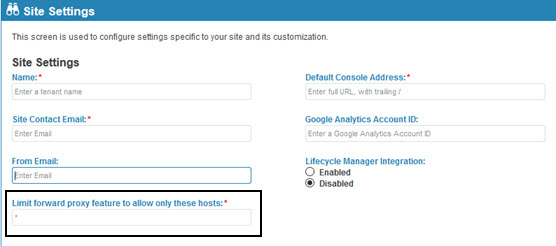
com.soa.atmosphere.forwardproxy -> forward.proxy.allowedHosts=<Network Director Host(s) and/or Load Balancer host>
Values are comma separated.
Prevent the automatic propagation of certain HTTP headers through the Network Director, and also configure a translation of the X-Forwarded-Host header.
Scope: Network Director Containers
In the Akana Administration Console, configure the following:
com.soa.http.client.core ->
block.headers.interceptor.blocked=content-type,content-length,content-range,content-md5,host,expect,keep-alive,
connection,transfer-encoding,atmo-forward-to,atmo-forwarded-from
header.formatter.interceptor.templates=replace=X-Forwarded-Host:{host}
Prevent the automatic propagation of certain HTTP headers through the Network Director, and also configure a NULL (none) translation of the X-Forwarded-Host header.
Scope: Community Manager Containers
In the Akana Administration Console, configure the following:
com.soa.http.client.core -> block.headers.interceptor.blocked=content-type,content-length,content-range,content-md5,host,expect,keep-alive, connection,transfer-encoding header.formatter.interceptor.templates=
You can configure the expiration period and refresh time for the security cache for API calls.
Scope: Network Director Containers
In the Akana Administration Console, optionally configure the following:
com.soa.api.security -> com.soa.api.security.cache.expirationPeriod=3600000 com.soa.api.security.cache.refreshTime=300000
The Anti-virus policy scans for files that are uploaded from the Community Manager Portal.
Scope: All Community Manager Containers
In the Policy Manager Console, create an Anti-Virus Operational Policy and configure the policy.
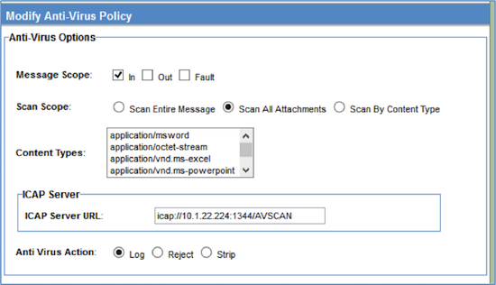
Attach this policy to the ConsoleResourceAPIService and the ContentAPIService in the Policy Manager -> Community Manager node in the Policy Manager Console Organization tree.
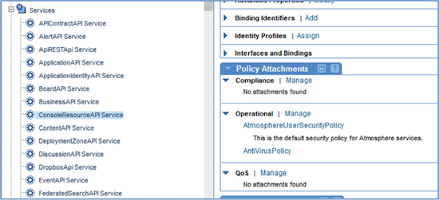
You can enable and disable CSRF protection in the Policy Manager and Community Manager User Interfaces.
Scope: All Community Manager and Policy Manager Containers
Due to the fact that Policy Manager is not Internet-facing, it is disabled by default. You can enable the CSRF protection in the Policy Manager in the Akana Administration Console:
com.soa.console.csrf -> org.owasp.csrfguard.Enabled=true
In Community Manager, CSRF configuration can be found under Administration > Settings > Security:
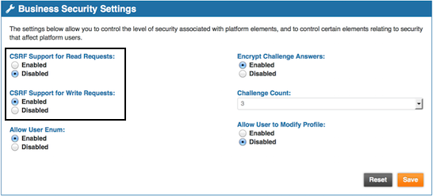
Cross-site-scripting (XSS) is a way to inject client-side script into Web pages viewed by other users.
Scope: All Community Manager and Policy Manager Containers
To configure any exceptions to the exclusion policy:
com.soa.console.xss -> exceptionURLs=[COMMA DELIMITED LIST]
To configure any new keywords that should be excluded:
com.soa.console.xss -> keywords=[COMMA DELIMITED LIST]
To turn XSS validation on/off:
com.soa.console.xss -> validate=[true|false]
User Account Enumeration occurs when the Community Manager user interface provides direct feedback to a user during the signup and registration processes to the effect that a user account already exists or is already registered. If this is turned off, no useful feedback is provided to the user, minimizing the security risk, but decreasing usability.
Scope: All Community Manager Containers
In Community Manager, User Account Enumeration configuration can be found under Administration > Settings > Security:
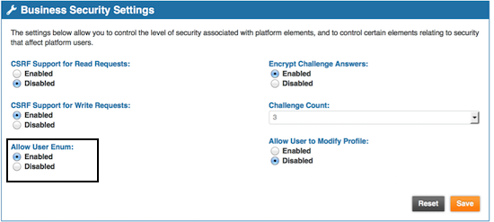
Challenge Questions/Answers are often required to increase security around password reset. When signing up to the platform, the user must provide the answer to one or more security questions, if the platform is set up to require them. The user's answers are stored in the database, and the user must answer one or more security questions on demand to perform certain functions such as resetting a password or changing the user profile.
In Community Manager, the Challenge Questions/Answers configuration can be found under Administration > Settings > Users:
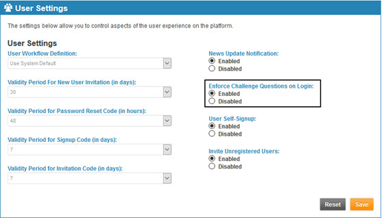
Set Enforce Challenge Questions on Login to Enabled.
Additional settings can be found under Administration > Settings > Security:
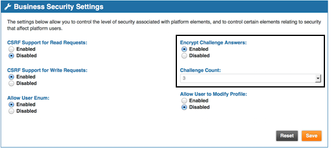
Configuration of the actual security challenge questions can be done via an API call into the system.
User Profile Modification permits a user access to their own profile for modification. In some circumstances, you may wish to prevent this (e.g. when user accounts are pre-provisioned).
Scope: All Community Manager Containers
In Community Manager, User Profile Modification configuration can be found under Administration > Settings > Security:
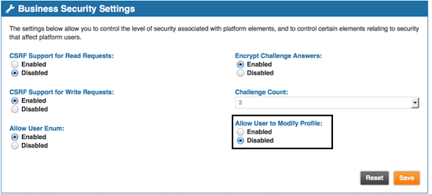
The account login rules may include many options regarding failure attempts allowed, including account suspension times, and other settings.
Scope: Community Manager
Login policies can be set:
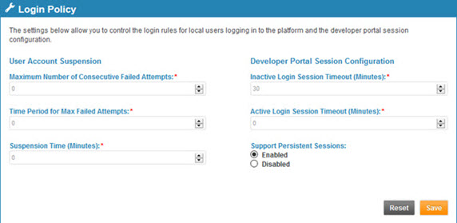
Password requirements (rules) may include many options such as length, characters allowed/required, and password change period.
Scope: Community Manager
Password rules can be set:
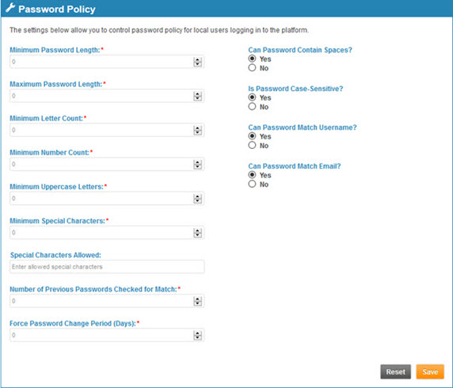
The X-FRAME-OPTIONS header plays a role in determining if and how the user interface can be embedded within an iFrame in a third-party site.
Scope: All Community Manager and Policy Manager Containers
To configure Community Manager:
com.soa.atmosphere.console -> atmosphere.console.config.xFrameOptions=[DESIRED HEADER]
To configure Policy Manager:
com.soa.console.xss -> xFrameOptions=[DESIRED HEADER]
You might want to prevent the Server header from being returned in responses.
Scope: All Community Manager and Policy Manager Containers
In the Akana Administration Console for each container, configure the following:
com.soa.platform.jetty -> jetty.server.sendServerVersion = false
NOTE: this property does not exist by default, so you will most likely need to add it.